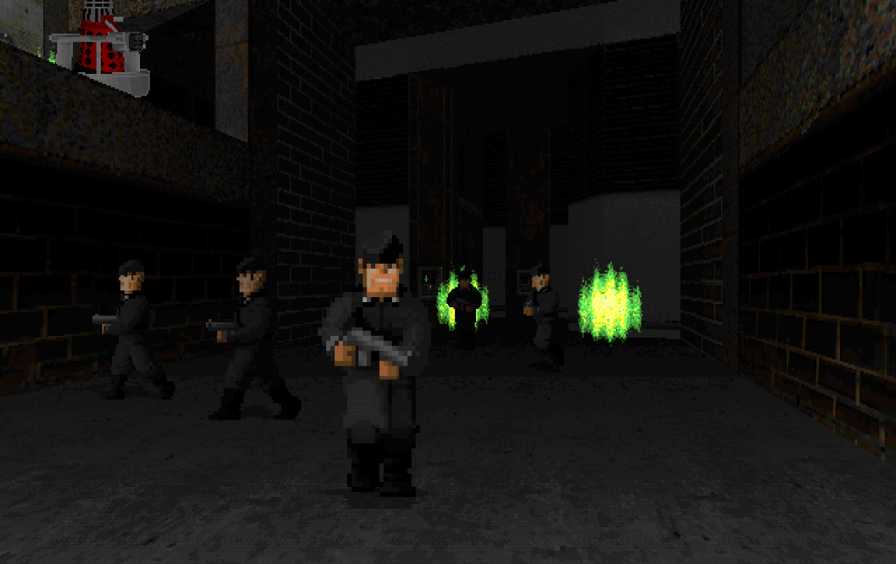
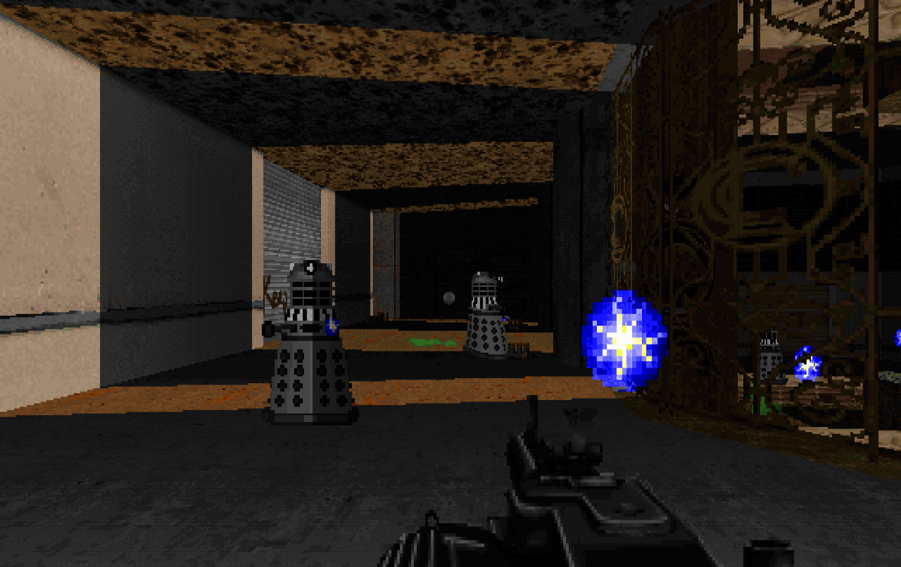
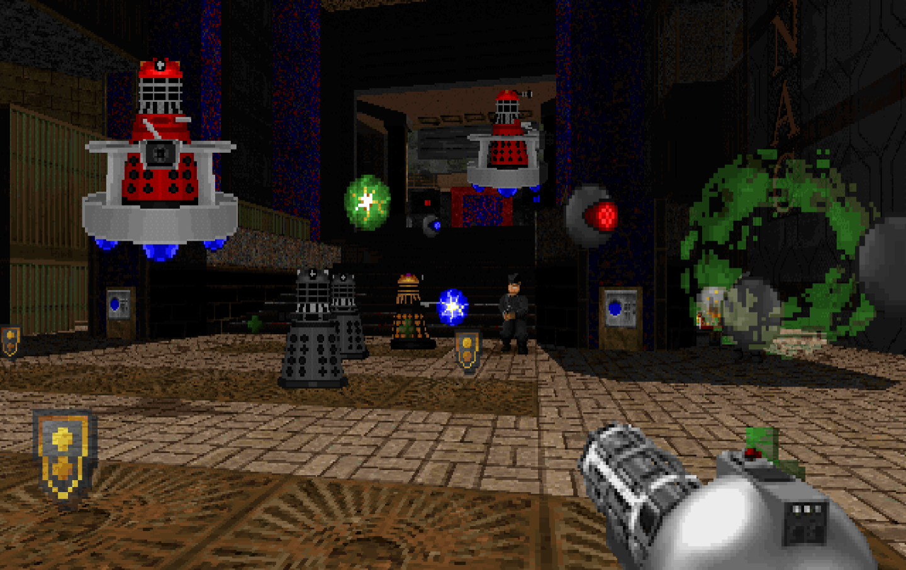
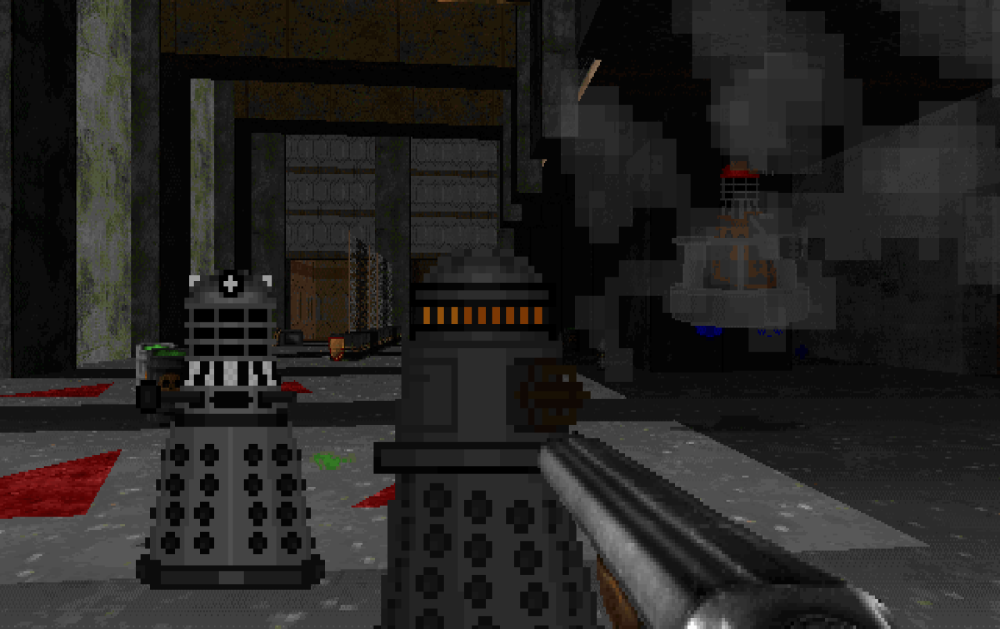
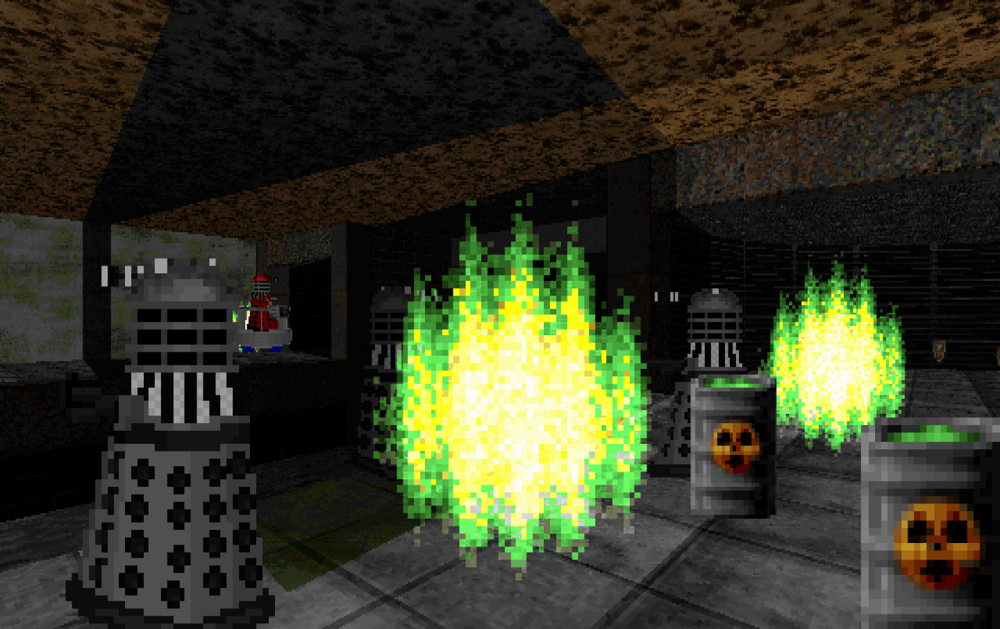
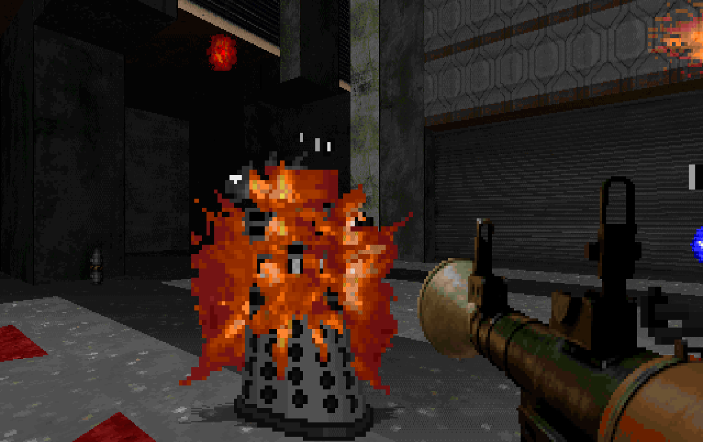
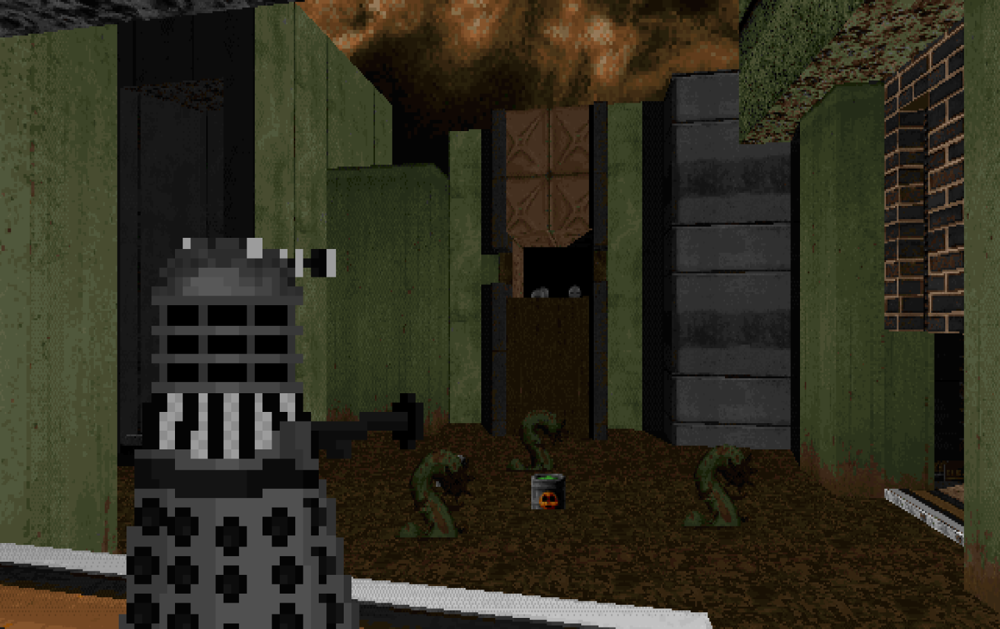

Ready to be exterminated? Abslom Daak: Prologue is the first part of the unholy Abslom Daak: Trinity. On the planet Tempus Umbrae, the Daleks are tampering with the forces of creation. By harnessing the power of the time controllers, the Daleks have opened a multithreaded Time Corridor. With this ultimate power, the Daleks have the means to traverse their own history, preventing past defeats and stopping the Doctor once and for all. Only one Dalek Killing Maniac can stop them! Do you dare to take on the ultimate adventure?
Abslom Daak: Prologue is ready to play now.








This project was made by Freazy Warr. You can visit my site here. Alternatively, you can find me on Doomworld, TikTok, YouTube, Reddit, Instagram and Gallifrey Base.
Daak: Trinity was solely created by Freazy Warr, but not really.
The following people have unknowingly contributed to this project:
Doom Retro by Brad Harding
The source port that this game runs on.
The Freedoom Project
For creating a base IWAD that allows me to share this game without relying on copyrighted content.
Andrew Brockhouse, sprite artist.
For creating the original Dalek wad back in 1996, and allowing me to use his work as a base for my own Dalek sprites.
Hayden49, midi composer
For creating hours of free to use music in Doom wads
Realm667, and its contributors.
For some of their sprites, including many of the weapons.
Nirrhit, my love.
For tolerating my Doctor Who obsession, and being with me regardless.